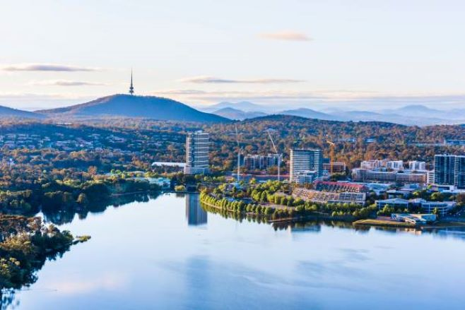
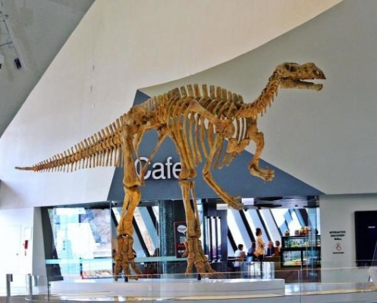
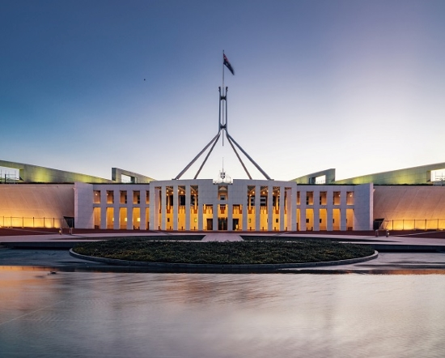
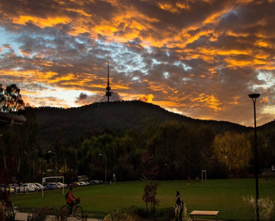
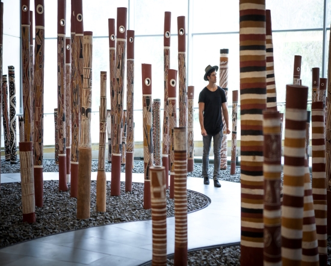
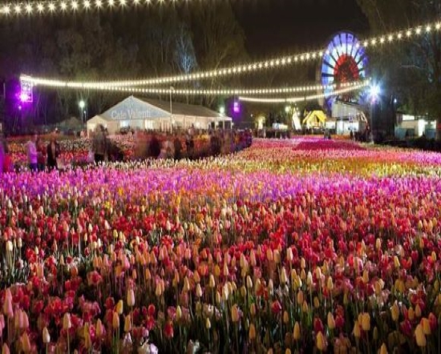
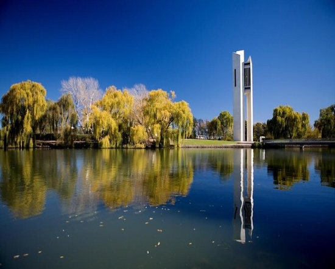
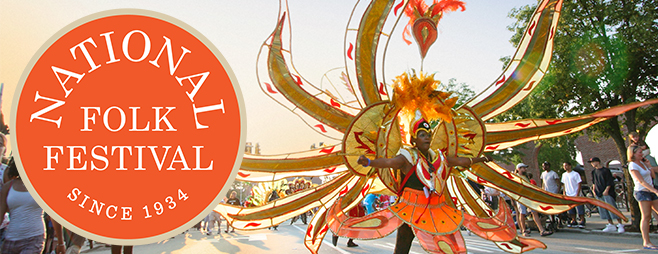
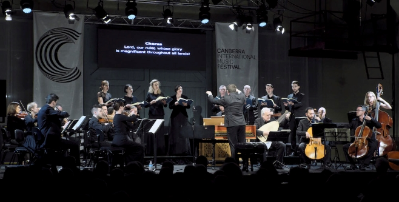

Discover more about Canberra, where nature abounds in this beautiful city. Those who are interested in nature will find Canberra to be a fantastic city to visit.

Discover the top-rated attractions & things to do in Canberra by visiting these fantastic places in Canberra.
Museum

Parliament House

Mountains

Cultural places - Art

Floriade

Peaceful environment

Many national events are held in Canberra, including the National Folk Festival 2022.
Our folk family is both continuing and curious about our new home, so it's a welcome home. In Canberra, Ngunnawal country, to celebrate with us.

Canberra International Music Festival
Experience a musical adventure together in Canberra. "The Festival is an event of national significance: stimulating, provocative and deeply satisfying on so many levels." Vincent Plush, The Australian
